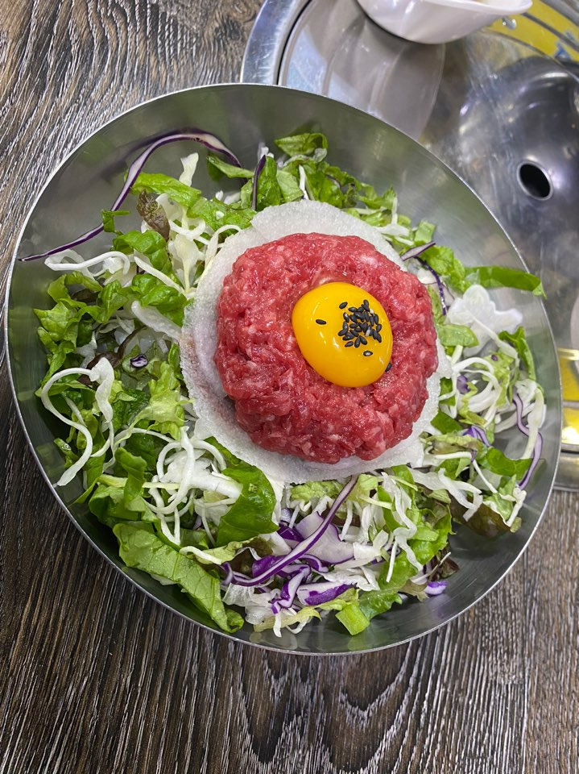
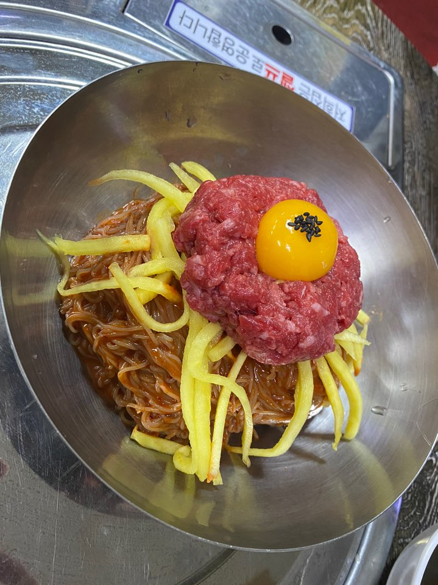
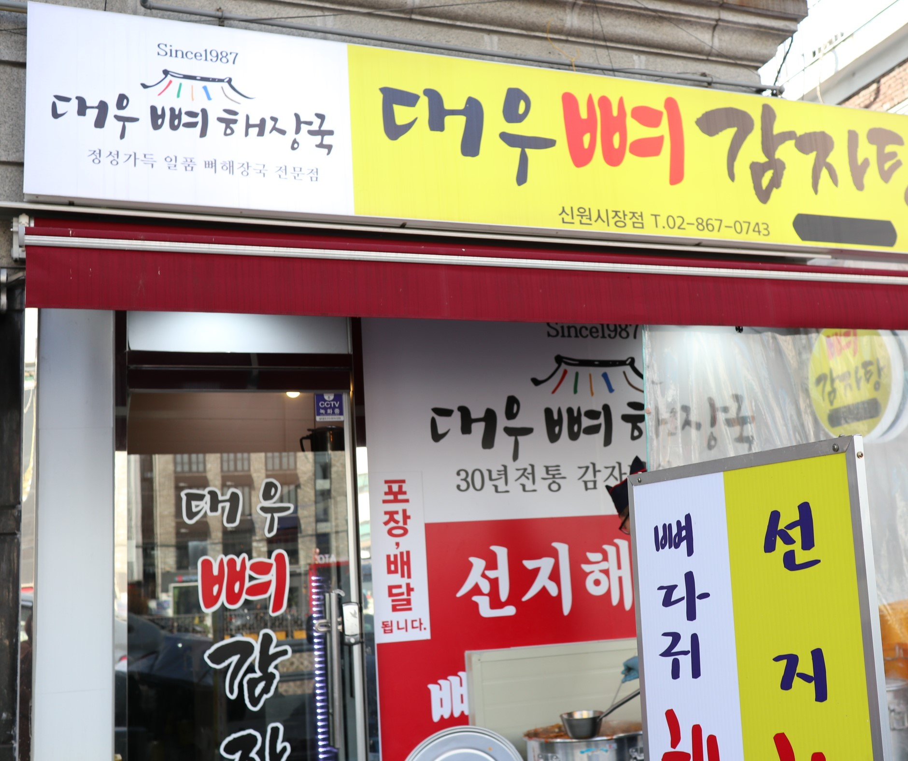
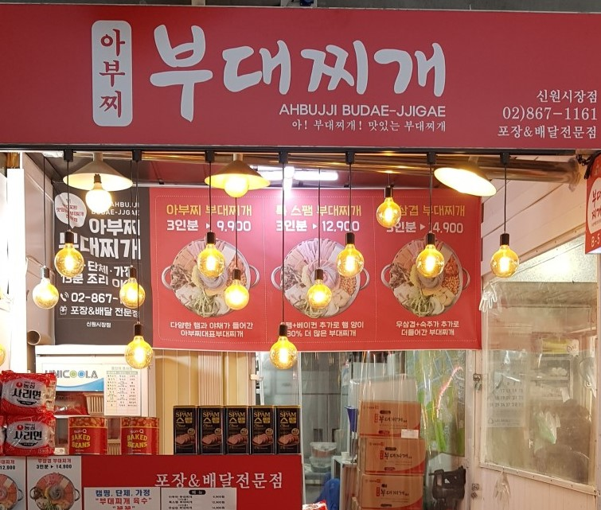
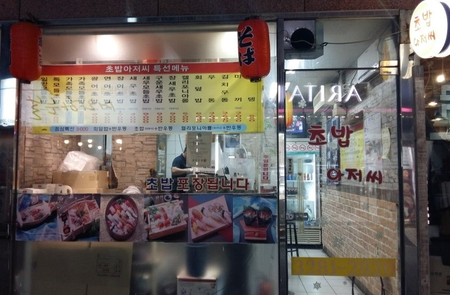

고모네 정육식당
  육회 비빔밥 10000원
육회 냉면 8000원
육회 비빔라면 8000원
육회 양 정말 많음. 고기도 1인분에 6000원 가량에 판매
대우 뼈 감자탕
뼈 해장국 7000원
최애 감자탕 가게, 항상 감자탕大로 먹어서 사진이 없다..
착한생칼국수


꽁보리밥정식 4800원

칼국수 3800원
맛은 무난한 편. 싼맛에 먹는 가게
도토리와 치킨

닭다리 10개 10000원
닭날개 10개 10000원
닭강정 中 5000원
강정은 5000원에 비해 양이 많음.
아부찌 부대찌개
아부찌 부대찌개 9900원
포장 전문 가게 기본이 3인분!!
초밥아저씨
모듬 초밥 10p 10000원
가족 모둠 초밥 20p 13000원
이틀 전에 예약을 안하면 포장도 안되는 가게
그래서 사진을 못 찍었다.